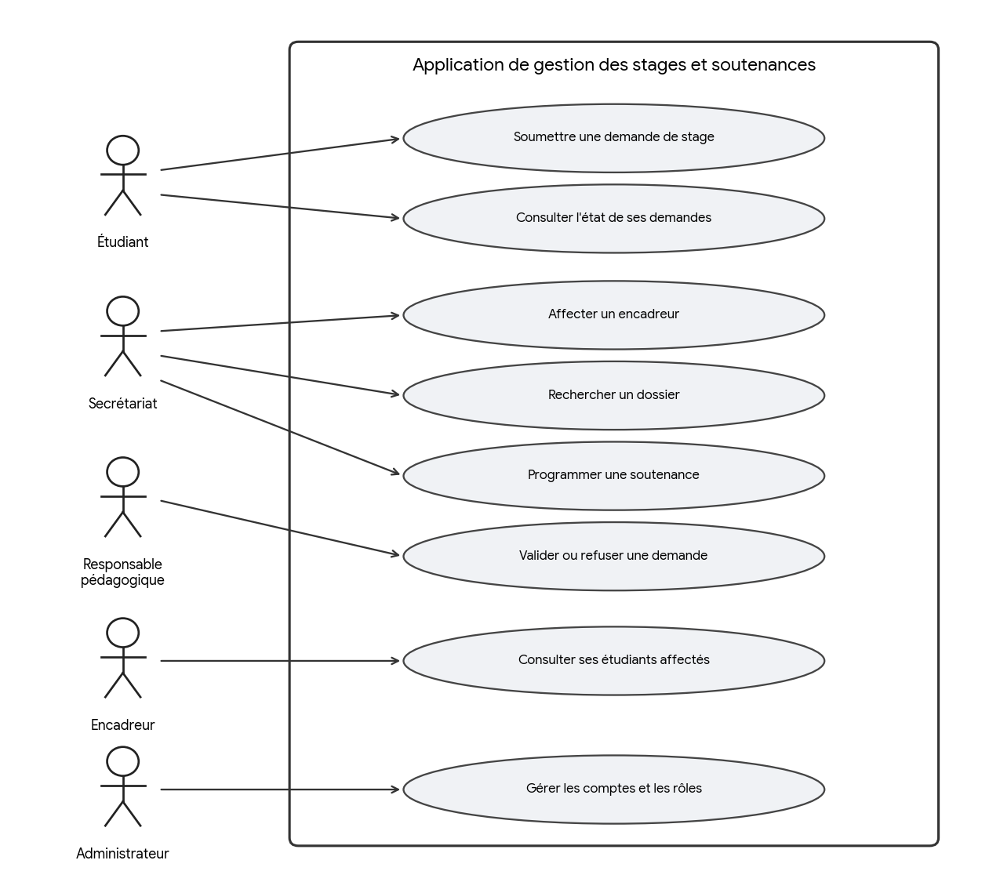
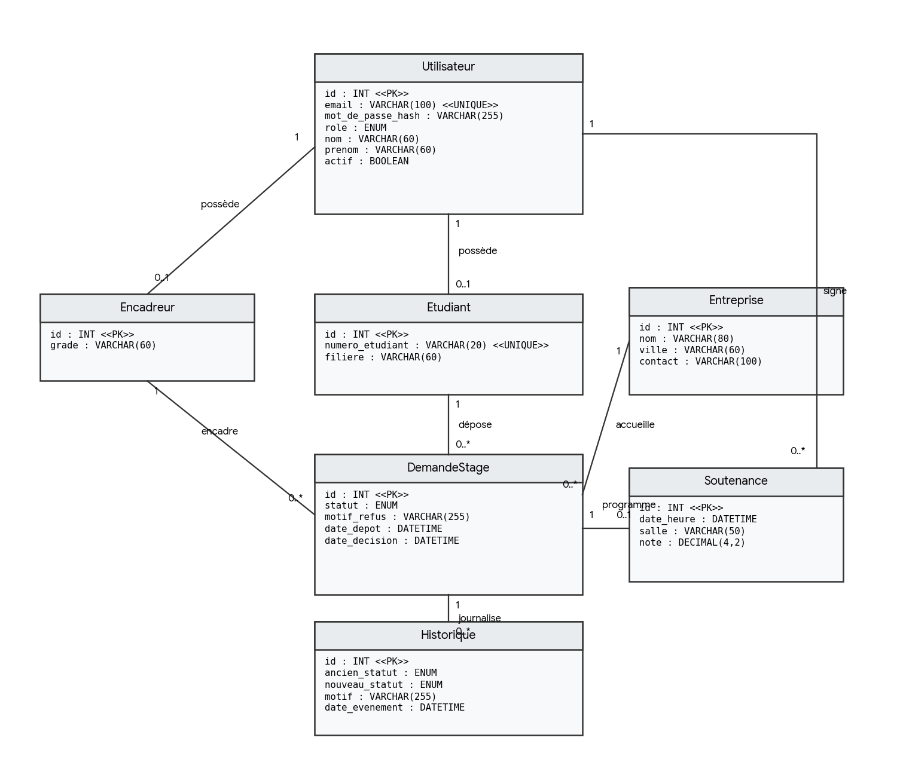

Cinq acteurs interagissent avec l'application. Suite à la consigne intégrant la gestion des soutenances (EF-05), le diagramme intègre désormais le cas d'utilisation de programmation de la soutenance par le secrétariat.

| Cas d'utilisation | Acteur principal | Exigence |
|---|---|---|
| Se connecter | Tous les acteurs | EF-01 |
| Soumettre une demande de stage | Étudiant | EF-02 |
| Consulter l'état de ses demandes | Étudiant | EF-06 |
| Valider ou refuser une demande | Responsable | EF-03 |
| Affecter un encadreur | Secrétariat | EF-04 |
| Programmer une soutenance | Secrétariat | EF-05 |
| Rechercher un dossier | Secrétariat | EF-07 |
| Consulter ses étudiants affectés | Encadreur | EF-05 |
| Gérer les comptes et les rôles | Administrateur | EF-08 |
Suite à l'ajout de la classe Soutenance demandée par la consigne, le modèle relationnel comporte désormais sept tables. La classe Soutenance est reliée à DemandeStage (association 1 — 0..1) pour planifier les soutenances des dossiers validés.

| Association et multiplicités | Traduction dans le schéma relationnel |
|---|---|
| Utilisateur 1 — 0..1 Étudiant | etudiant.utilisateur_id NOT NULL UNIQUE |
| Utilisateur 1 — 0..1 Encadreur | encadreur.utilisateur_id NOT NULL UNIQUE |
| Étudiant 1 — 0..* DemandeStage | demande_stage.etudiant_id NOT NULL (FK) |
| Entreprise 1 — 0..* DemandeStage | demande_stage.entreprise_id NOT NULL (FK) |
| Encadreur 1 — 0..* DemandeStage | demande_stage.encadreur_id NULL (FK) |
| DemandeStage 1 — 0..1 Soutenance | soutenance.demande_id NOT NULL UNIQUE (FK) |
| DemandeStage 1 — 0..* Historique | historique.demande_id NOT NULL (FK, ON DELETE CASCADE) |
| Utilisateur 1 — 0..* Historique | historique.auteur_id NOT NULL (FK) |
Règle appliquée : l'association 1 — 0..1 entre DemandeStage et Soutenance se traduit par une clé étrangère dans la table soutenance avec une contrainte UNIQUE, garantissant qu'une demande validée possède au plus une soutenance programmée.
| # | Acteur ou composant | Échec possible | Code |
|---|---|---|---|
| 1 | Contrôleur — vérifier la session | Session absente | 401 |
| 2 | DemandeRepository::findById | Demande inexistante | 404 |
| 3 | SoutenanceService — statut | Demande non validée (ex: SOUMISE) | 409 |
| 4 | SoutenanceService — salle/conflit | Salle déjà occupée au même créneau | 409 |
| 5 | Repository — INSERT soutenance (transaction) | Erreur technique | 500 + rollback |
| 6 | Contrôleur — réponse | — | 201 Created |
Trois scripts versionnés reconstruisent la base à l'identique avec la prise en compte de la table soutenance :
| Fichier | Contenu |
|---|---|
| 001_schema.sql | Création des sept tables (dont soutenance), clés primaires, étrangères, UNIQUE et CHECK, et vue v_dossiers_sans_encadreur. |
| 002_seed.sql | Jeu d'essai fictif complet : 8 comptes, 3 étudiants, 2 encadreurs, 2 entreprises, 4 demandes, 1 soutenance programmée, 5 lignes d'historique. |
| 003_verification.sql | Contrôles de chargement : comptages par table (7 tables), répartition par statut, dossiers sans encadreur et liste des soutenances. |
+---------------+--------+ | table_ | lignes | +---------------+--------+ | utilisateur | 8 | | etudiant | 3 | | encadreur | 2 | | entreprise | 2 | | demande_stage | 4 | | soutenance | 1 | | historique | 5 | +---------------+--------+ +-----------+----------+ | statut | demandes | +-----------+----------+ | BROUILLON | 1 | | SOUMISE | 1 | | VALIDEE | 1 | | REFUSEE | 1 | +-----------+----------+ +-------------------------+ | dossiers_sans_encadreur | +-------------------------+ | 0 | +-------------------------+ +----+------------+---------------------+---------+ | id | demande_id | date_heure | salle | +----+------------+---------------------+---------+ | 1 | 3 | 2026-11-25 09:00:00 | Amphi B | +----+------------+---------------------+---------+
Le modèle est mis à jour pour intégrer la soutenance (v2) ; restent à coder les services associés et les tests unitaires correspondants. Les sources PlantUML et scripts SQL sont intégralement versionnés.